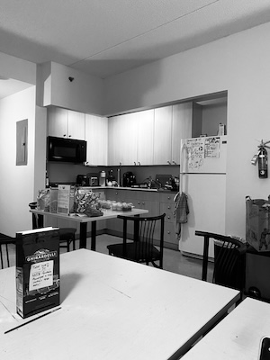
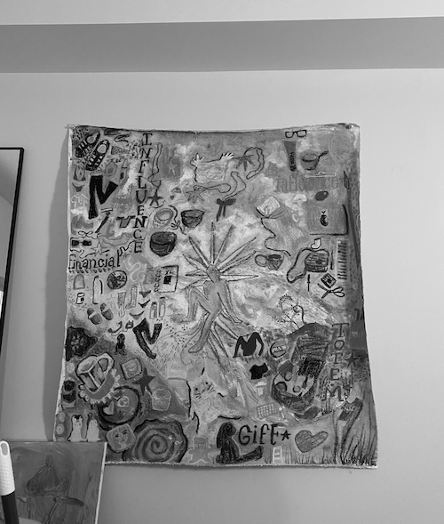
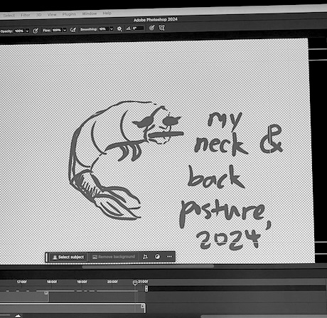

note the word "before".
right now, i am sitting in the communal room of my suite. the kitchen is to the left of me, a mural on canvas painted by one of my suitemates hanging on the right. it is currently 2:57 A.M. this is the standard time that i should be sleeping instead of typing this. but i digress, because i don't sleep and my usual sleeping time ranges from 5 AM to never. i sit on a (very) uncomfortable chair in front of two square-shaped dining tables that have seen better days. my back curls like an unpeeled shrimp. i bite my tongue and it hurts but i keep doing it because i collect bad habits at a faster rate than bottle caps (although there is a correlation between the two. trust me on this). i blink and my eyes scream in agony for me to sleep (but i know that if i do, i will oversleep).
{kind=link}
{kind=link}
{kind=link}
{kind=link}
i think i might have insommnia. do i have insommnia? my dad and my grandpa have it. do i have to take melatonin? my roommate tells me its very effective but my mom discourages me, saying that i will get addicted (she's probably right).
i feel the life draining from me as i am typing this. a sliver of it that i didn't know i still had. i am weightless and heavy at the same time. i am chasing behind work, projects and projects and a bajillion other stuff (thankfully my boss is nice and understands, nodding with a smile as i apologetically explain through a zoom screen why i can't finish my current assigned project before the end of this week).
how did i get to this point? i was ok before. at least, only a few months ago. i had everything handled. i was on top of things (or at least caught up to things). i don't really know what happened in between.
i should stop worrying. i should really stop worrying. my parents tell me not to, but i don't think they fully understand: they mean well, but they come from a different generation, different circumstances. i wonder if i can ever fully open myself to someone. not romantically, but maybe as a friend. i am so used to keeping to myself that to open myself and to go outside into the worldis still strange to me, even in the middle of this city where i am constantly motivated to go out. it's expected of me.
i was ok before. maybe i'll be ok again.